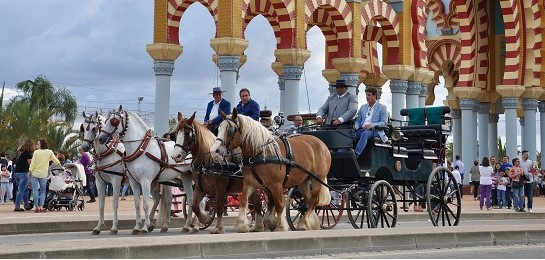
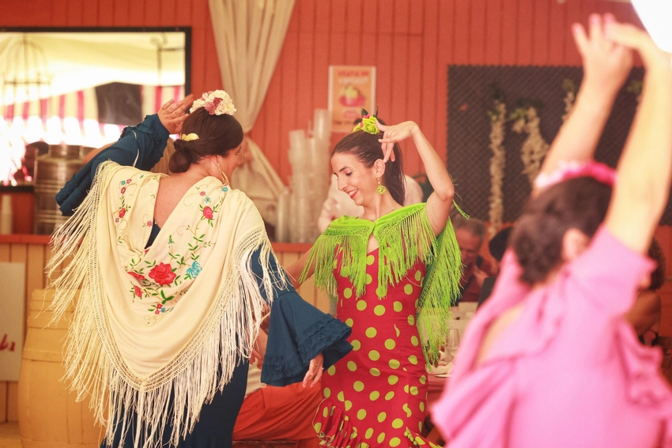
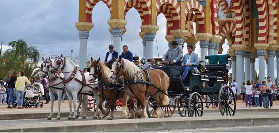
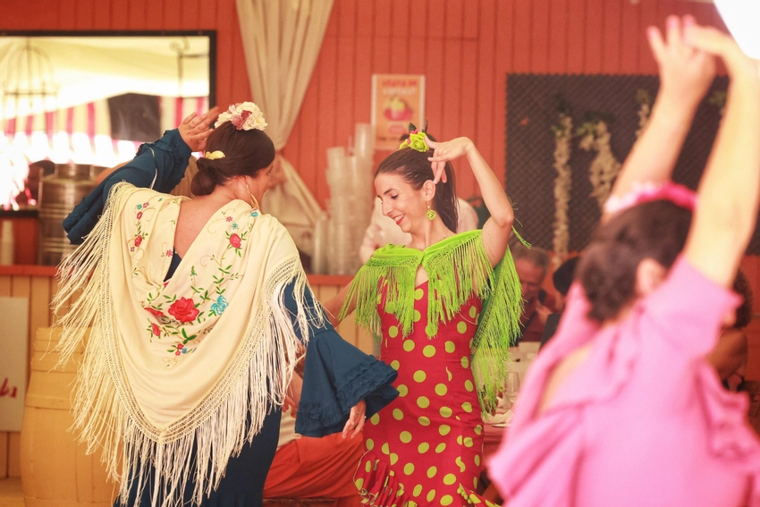

Comparación entre Ferias
En sus inicios, las ferias eran eventos sencillos y prácticos, centrados en el comercio y las necesidades rurales. Las calles no estaban decoradas, las casetas no existían y las actividades de ocio eran improvisadas, como concursos de ganado o pequeñas celebraciones locales. La feria moderna, en cambio, es una explosión de luz, color y vida. Hoy en día, las ferias combinan tradición y modernidad. Las casetas son salones decorados donde se bailan sevillanas y se comparten platos típicos como el pescaíto frito. Las atracciones mecánicas, los espectáculos de luces y la música en vivo atraen tanto a visitantes locales como internacionales. Aunque el comercio ya no es el foco principal, la feria conserva su esencia como espacio de convivencia y celebración.
 


